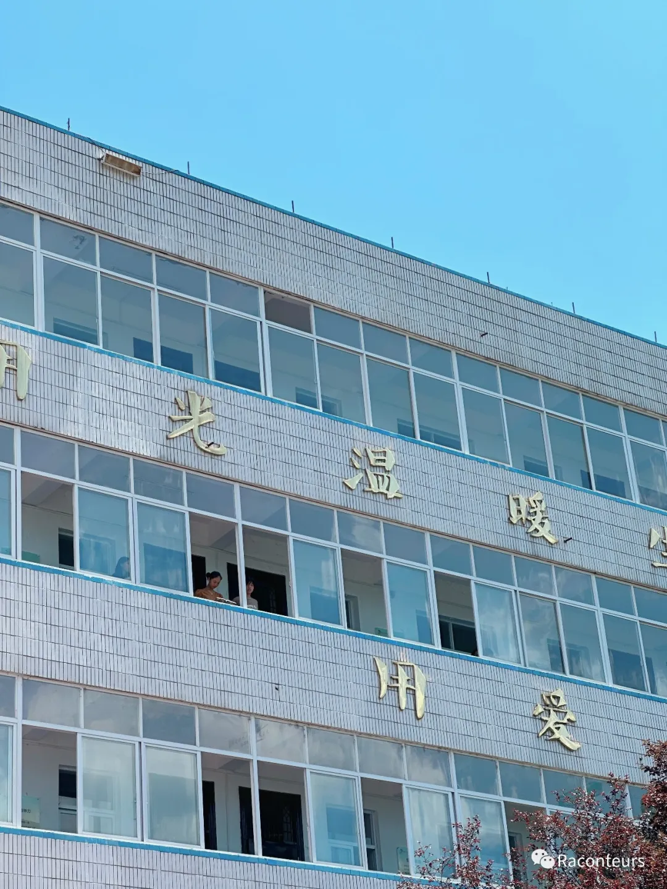
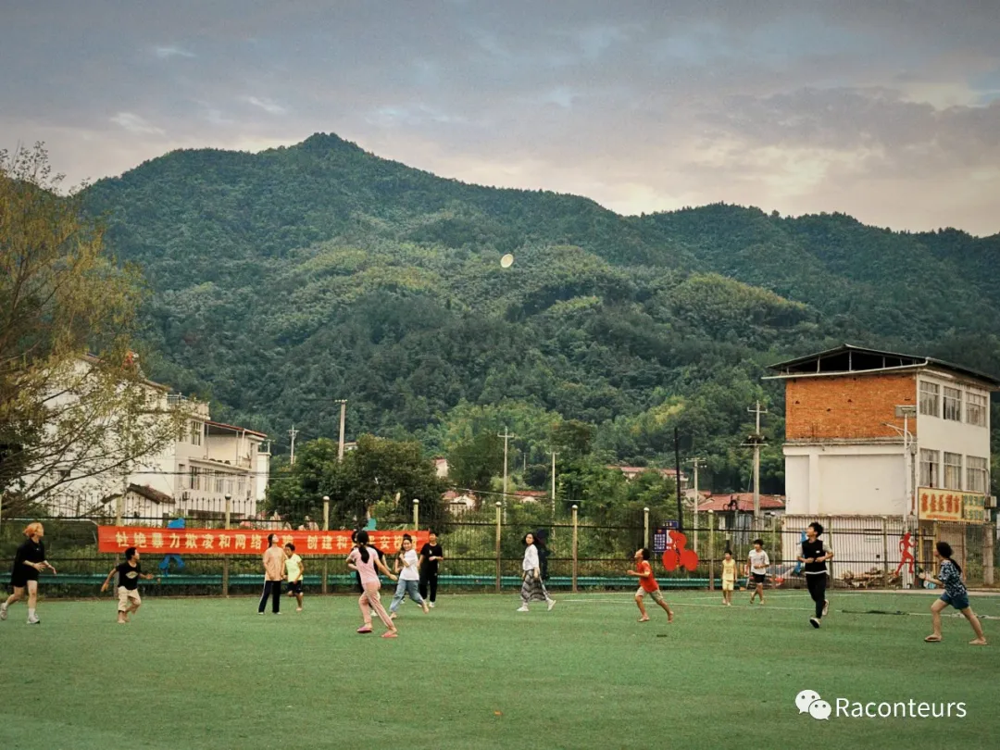
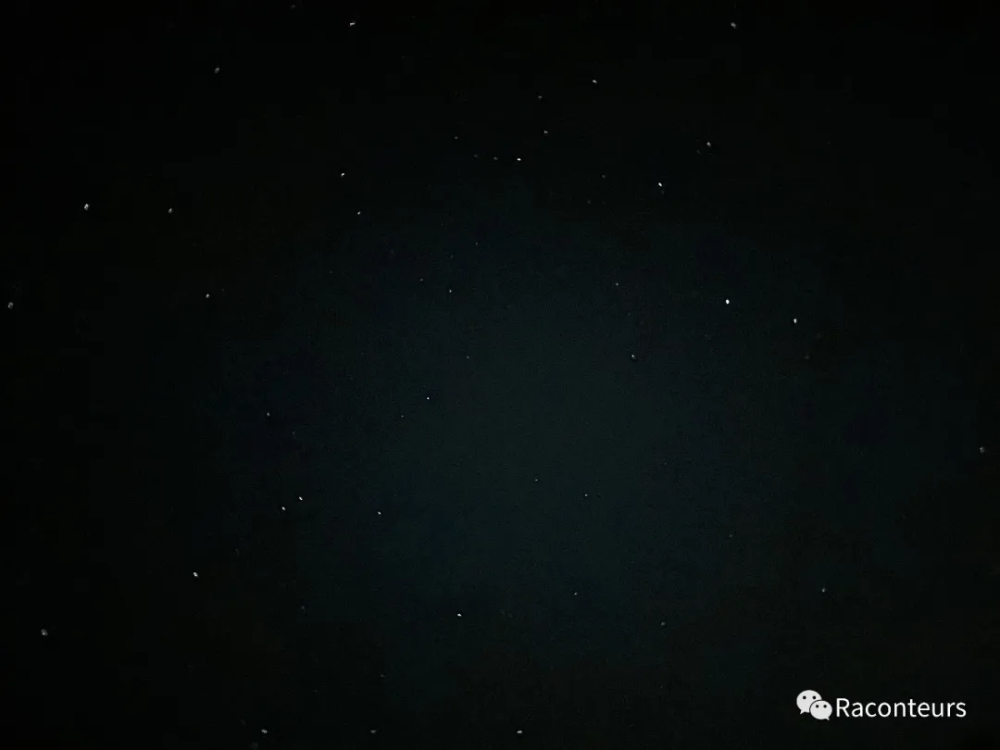
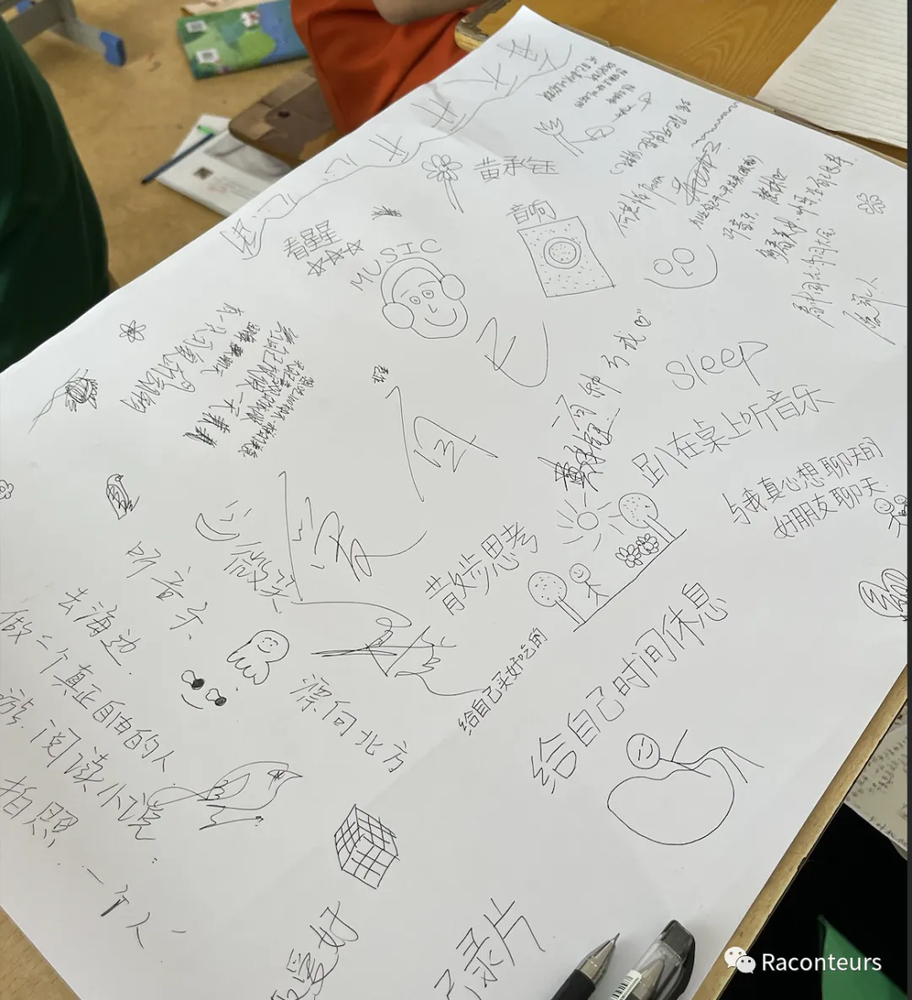
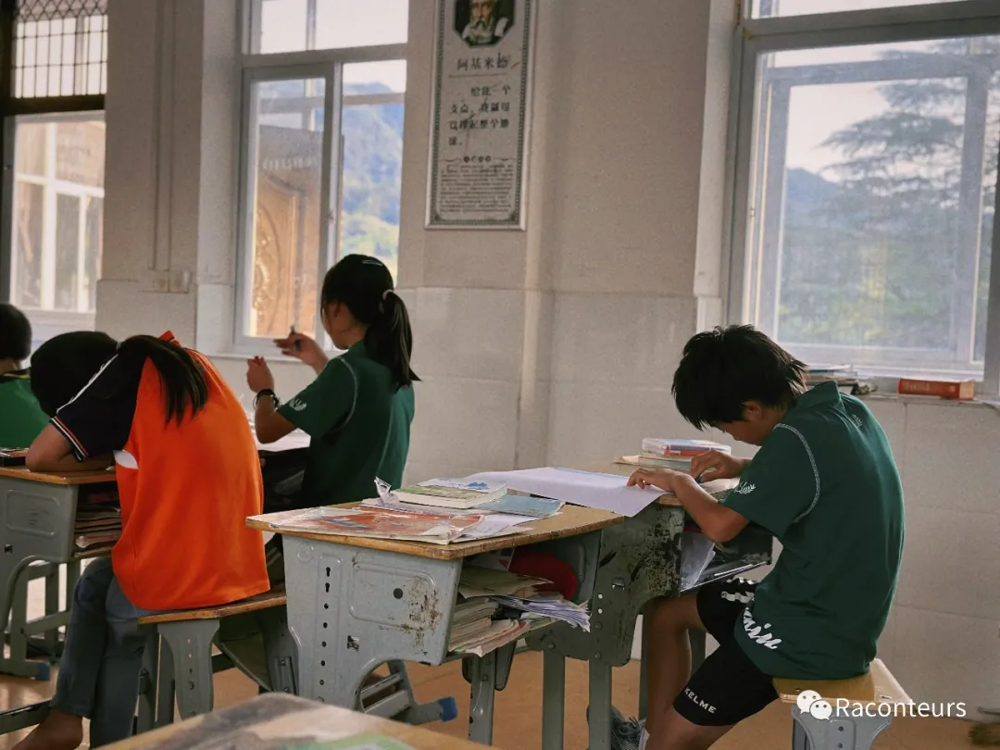
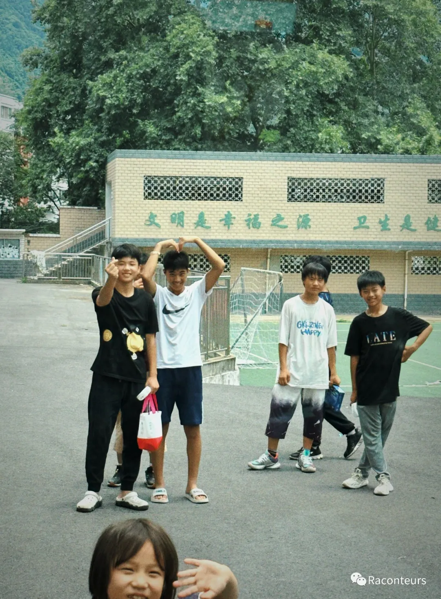

It's been a long time since I last opened my bear; I've arrived at Jinzhai Station.
The car jostled along, tires crunching over the dust-covered ground. I embarked on a road shrouded in unknowns, heading to the Guangai School in Jinzhai for teaching support. For the first time, I truly saw the layers upon layers of mountains, enveloped in wave-like peaks, where even the wind carried a sense of trapped despair. I can't fathom the mysteries hidden within each of these besieged mountains.
We ran wildly on the playground, the cheers and whistles blending in my ears. Figures weaved across the field as the setting sun poured into this basin surrounded by mountains, like it was filled with countless shimmering fragments. A frisbee traced an arc in the twilight, caught steadily by another's hand, and I clearly saw many smiles wrapped in joy spreading wide.
At night, stepping out from that stuffy meeting room after hours of discussing complex issues, always facing doubts in decisions big or small; or lamenting my own insignificance. But upon stepping outside, seeing the children waiting and the stars above, never has a moment so moved me. In the dark night, countless stars of all sizes twinkled like the kind-hearted children of all ages in this old school of Jinzhai. I heard someone say, "This is the gift from the heavens." Cr. Idle Fish
Actually, in the first class, I played a video from YouTube titled "happiness." Those mice have never truly been happy. Even though they've numbed themselves with alcohol, created illusions of happiness with drugs, and were pushed by crowds to move forward, they've never had true happiness. So, if there really comes a day when you're in an obscured environment and have doubts about the happiness you pursue, the answer is to leave because we always deserve true freedom and passion.
I know many of them come from different families, and the fatal traumas they've experienced have never truly healed. But we are covering those wounds bit by bit with band-aids tied like bows. A hundred ways to love oneself, I see different answers: to be a free person, to maintain passion. I am truly fortunate that on the white paper, the kites and ideals being set free, filled with color by colored pens, have never stopped flying because of these traumas.
We often like to sit on the corridor floor during breaks, chatting. They have a stronger pursuit of beautiful things than ordinary people, sharing songs from QQ Music Space, I remember it was a song called "Can I"; talking about distant ideals and thoughts, discussing which convenience store has the best ice cream...
I have never expected education to greatly change a person's overall inner self in a very short time, the habits they have developed from childhood, and the values influenced by various complex factors. But I know that in a short teaching period, we can try to subtly influence through every meaningful class, every sincere heart-to-heart interaction. We are all earthworms, working hard with our weak strength to loosen the hard soil, allowing life to better absorb moisture.
I admit, there was a moment when I doubted short-term teaching support. I didn't initially believe we could give them a complete foundation in a week, or make a change to this besieged situation. But when I really stood here, facing the dense new names in my memorandum, they became familiar from being strangers, those blurred faces started to focus, I saw those in need slowly changing, and for the first time, the mountains that seemed to trap us began to look small. I found that I have never denied my choice at any moment. Finally, those who were originally timid, rejecting looks began to become tolerant, and our original intention was fortunately accepted.
I really like a sentence in the Ferryman: "I know I am not his tomorrow, the only thing I can do is to take him to the other side." Unfortunately, I am not the Ferryman, I can't take you to the other side. If I can, I can only be a wave, fortunate to be the power that helps those who reach the other shore.
The farewell car stopped at the door for a long time, they stood in front of the glass window, making heart signs. I saw many children, they were jumping, waving silently in front of the car window. I suddenly burst into tears, thinking of the lyrics of "Can I, Stay by Your Side", thinking of the hugs and runs under the twilight, those smiles that bloomed because of fate. Suddenly, the engine made a "rumble" sound, the car hurriedly drove like the first time it came, I saw those faces crying and laughing began to blur, gradually disappearing in the distance. I kept looking back at this familiar school from the car window until the rolling dust completely covered the line of sight. Photo Cr. Li Ruoxi Ada